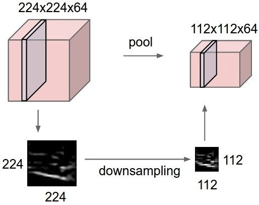

AI 从业者都会用到的 10 个深度学习方法
过去十年里，人们对机器学习的兴趣经历了爆炸式的整长。我们几乎每天都可以在计算机程序、行业会议和媒体上看到机器学习的身影。很多关于机器学习的讨论都混淆了“机器学习能做什么”和“人类希望机器学习能做什么”。从根本上讲，机器学习是运用算法从原始数据中提取信息，并用某种类型的模型进行表示，然后使用该模型对一些尚未用模型表示的其他数据来进行推断。
神经网络就是机器学习各类模型中的其中一类，并且已经存在了至少50年。神经网络的基本单位是节点，它的想法大致来源于哺乳动物大脑中的生物神经元。生物大脑中的神经元节点之间的链接是随着时间推移不断演化的，而神经网络中的神经元节点链接也借鉴了这一点，会不断演化（通过“训练”的方式）。
神经网络中很多重要框架的建立和改进都完成于二十世纪八十年代中期和九十年代初期。然而，要想获得较好结果需要大量的时间和数据，由于当时计算机的能力有限，神经网络的发展受到了一定的阻碍，人们的关注度也随之下降。二十一世纪初期，计算机的运算能力呈指数级增长，业界也见证了计算机技术发展的“寒武纪爆炸”——这在之前都是无法想象的。深度学习以一个竞争者的姿态出现，在计算能力爆炸式增长的十年里脱颖而出，并且赢得了许多重要的机器学习竞赛。其热度在2017年仍然不减。如今，在机器学习的出现的地方我们都能看到深度学习的身影。
为了跟上时代的潮流，我参加了 Udacity 的“深度学习”课程。这是一个很好的入门课程，包括深度学习的动机和在 TensorFlow 中针对复杂的和/或大规模数据集进行学习的智能系统的设计。 对于课程作业，我使用和开发了用于图像识别的卷积神经网络，带有嵌入的自然语言处理以及运用递归神经网络/长期短期记忆的基于字符的文本生成程序。所有 Jupyter Notebook 的代码都在我的 GitHub。
下图是课程作业的一个结果，词向量的 t-SNE 投影，通过相似性进行聚类。
最近，我开始阅读关于深度学习的学术论文。根据我的个人研究，以下文章对这个领域的发展产生了巨大的影响：
NYU 1998 年的文章《基于梯度学习的文档识别》（Gradient-Based Learning Applied to Document Recognition） 介绍了卷积神经网络在机器学习中的应用。
Toronto 2009年的文章《深度波兹曼机器》（Deep Boltzmann Machines） 针对波兹曼机提出了一种新的学习算法，其中包含许多隐藏层。
Stanford 和 Google 2012年联合发表的文章《使用大规模非监督学习构建高层特征》（Building High-Level Features Using Large-Scale Unsupervised Learning） 解决了仅利用未标记的数据构建高级、特定类的特征检测器的问题。
Berkeley 2013年的文章《用于一般视觉识别的深层卷积激活特征》（DeCAF——A Deep Convolutional Activation Feature for Generic Visual Recognition） 发布了名为 DeCAF 的算法，这是深度卷积激活特征的一个开源实现，使用相关的网络参数，视觉研究人员能够利用一系列视觉概念学习范例进行深入实验。
DeepMind 2016年的文章《用深度强化学习玩Atari》（Playing Atari with Deep Reinforcement Learning） 提出了第一个可以成功地通过强化学习从高维感官输入中直接学习控制策略的深度学习模型。
通过研究和学习，我学到了大量关于深度学习的相关知识。在这里，我想分享人工智能工程师 10 个用于解决机器学习问题的强大的深度学习方法。但是，我们首先需要定义什么是深度学习。
如何定义深度学习是很多人面临的一个挑战，因为它的形式在过去的十年中已经慢慢地发生了改变。下图直观地展示了人工智能，机器学习和深度学习之间的关系。
人工智能领域广泛，存在时间较长。深度学习是机器学习领域的一个子集，而机器学习是人工智能领域的一个子集。一般将深度学习网络与“典型”前馈多层网络从如下方面进行区分：
深度学习网络具有比前馈网络更多的神经元
深度学习网络连接层之间的方式更复杂
深度学习网络需要有像“寒武纪大爆发”式的计算能力进行训练
深度学习网络能够自动提取特征
上文提到的“更多的神经元”是指近年来神经元的数量不断增加，就可以用更复杂的模型来表示。层也从多层网络中每一层完全连接，发展到卷积神经网络中神经元片段的局部连接，以及与递归神经网络中的同一神经元的循环连接（与前一层的连接除外）。
因此，深度学习可以被定义为以下四个基本网络框架中具有大量参数和层数的神经网络：
无监督预训练网络
卷积神经网络
循环神经网络
递归神经网络
在这篇文章中，我主要讨论三个框架：
卷积神经网络（Convolutional Neural Network）基本上就是用共享权重在空间中进行扩展的标准神经网络。卷积神经网络主要是通过内部卷积来识别图片，内部卷积可以看到图像上识别对象的边缘。
循环神经网络（Recurrent Neural Network）基本上就是在时间上进行扩展的标准神经网络，它提取进入下一时间步的边沿，而不是在同一时间进入下一层。循环神经网络主要是为了识别序列，例如语音信号或者文本。其内部的循环意味着网络中存在短期记忆。
递归神经网络（Recursive Neural Network）更类似于分层网络，其中输入序列没有真正的时间面，但是必须以树状方式分层处理。以下10种方法均可应用于这些框架。
1、反向传播
反向传播是一种计算函数偏导数（或梯度）的简单方法，它的形式是函数组合（如神经网络）。在使用基于梯度的方法求解最优化问题（梯度下降只是其中之一）时，需要在每次迭代中计算函数梯度。
对于一个神经网络，其目标函数是组合形式。那么应该如何计算梯度呢？有2种常规方法：（i）微分解析法。函数形式已知的情况下，只需要用链式法则（基础微积分）计算导数。（ii）有限差分法近似微分。这种方法运算量很大，因为函数评估的数量级是 O(N)，其中 N 是参数的个数。与微分解析法相比，这种方法运算量更大，但是在调试时，通常会使用有限差分验证反向传播的效果。
2、随机梯度下降
梯度下降的一个直观理解就是想象一条源自山顶的河流。这条河流会沿着山势的方向流向山麓的最低点，而这也正是梯度下降法的目标。
我们所期望的最理想的情况就是河流在到达最终目的地（最低点）之前不会停下。在机器学习中，这等价于我们已经找到了从初始点（山顶）开始行走的全局最小值（或最优值）。然而，可能由于地形原因，河流的路径中会出现很多坑洼，而这会使得河流停滞不前。在机器学习术语中，这种坑洼称为局部最优解，而这不是我们想要的结果。有很多方法可以解决局部最优问题（这里不再讨论）。
因此，由于地形（即函数性质）的限制，梯度下降算法很容易卡在局部最小值。但是，如果能够找到一个特殊的山地形状（比如碗状，术语称作凸函数），那么算法总是能够找到最优点。在进行最优化时，遇到这些特殊的地形（凸函数）自然是最好的。另外，山顶初始位置（即函数的初始值）不同，最终到达山底的路径也完全不同。同样，不同的流速（即梯度下降算法的学习速率或步长）也会导致到达目的地的方式有差异。是否会陷入或避开一个坑洼（局部最小值），都会受到这两个因素的影响。
3、学习率衰减
调整随机梯度下降优化算法的学习速率可以提升性能并减少训练时间。这被称作学习率退火或自适应学习率。训练中最简单也最常用的学习率自适应方法就是逐渐降低学习率。在训练初期使用较大的学习率，可以对学习率进行大幅调整；在训练后期，降低学习率，以一个较小的速率更新权重。这种方法在早期可以快速学习获得较好的权重，并在后期对权重进行微调。
两个流行而简单的学习率衰减方法如下：
线性地逐步降低学习率
在特定时点大幅降低学习率
4、Dropout
拥有大量参数的深度神经网络是非常强大的机器学习系统。然而，在这样的网络中,过拟合是一个很严重的问题。而且大型网络的运行速度很慢，这就使得在测试阶段通过结合多个不同的大型神经网络的预测来解决过拟合问题是很困难的。Dropout 方法可以解决这个问题。
其主要思想是，在训练过程中随机地从神经网络中删除单元（以及相应的连接），这样可以防止单元间的过度适应。训练过程中，在指数级不同“稀疏度”的网络中剔除样本。在测试阶段，很容易通过使用具有较小权重的单解开网络（single untwined network），将这些稀疏网络的预测结果求平均来进行近似。这能有效地避免过拟合，并且相对于其他正则化方法能得到更大的性能提升。Dropout 技术已经被证明在计算机视觉、语音识别、文本分类和计算生物学等领域的有监督学习任务中能提升神经网络的性能，并在多个基准数据集中达到最优秀的效果。
5、最大池
最大池是一种基于样本的离散化方法。目标是对输入表征（图像、隐藏层输出矩阵等）进行下采样，降低维度并且允许对子区域中的特征进行假设。

通过提供表征的抽象形式，这种方法可以在某种程度上解决过拟合问题。同样，它也通过减少学习参数的数目以及提供基本的内部表征转换不变性来减少计算量。最大池是通过将最大过滤器应用于通常不重叠的初始表征子区域来完成的。
6、批量标准化
当然，包括深度网络在内的神经网络需要仔细调整权重初始值和学习参数。批量标准化能够使这个过程更加简单。
权重问题：
无论怎么设置权重初始值，比如随机或按经验选择，初始权重和学习后的权重差别都很大。考虑一小批权重，在最初时，对于所需的特征激活可能会有很多异常值。
深度神经网络本身就具有病态性，即初始层的微小变化就会导致后一层的巨大变化。
在反向传播过程中，这些现象会导致梯度的偏移，这就意味着在学习权重以产生所需要的输出之前，梯度必须补偿异常值。而这将导致需要额外的时间才能收敛。
批量标准化将这些梯度从异常值调整为正常值，并在小批量范围内（通过标准化）使其向共同的目标收敛。
学习率问题：通常来说，学习率都比较小，这样只有一小部分的梯度用来校正权重，因为异常激活的梯度不应该影响已经学习好的权重。通过批量标准化，这些异常激活的可能性会被降低，就可以使用更大的学习率加速学习过程。
7、长短期记忆
长短期记忆网络（LSTM）和其他递归神经网络中的神经元有以下三个不同点：
它可以决定何时让输入进入神经元
它可以决定何时记住上一个时间步中计算的内容
它可以决定何时让输出传递到下一个时间戳
LSTM的强大之处在于它可以只基于当前的输入就决定上述所有。请看下方的图表：
当前时间戳的输入信号 x(t) 决定了上述三点。输入门（input gate）决定了第一点，遗忘门（forget gate）决定了第二点，输出门（output gate）决定了第三点。只依赖输入就可以完成这三项决定。这是受到大脑工作机制的启发，大脑可以基于输入来处理突然的上下文语境切换。
8、Skip-gram
词嵌入模型的目的是针对每个词学习一个高维密集表征，其中嵌入向量之间的相似性显示了相应词语之间语义或句法的相似性。Skip-gram 是一种学习词嵌入算法的模型。
skip-gram 模型（包括很多其它词嵌入模型）背后的主要思想是：如果两个词汇项有相似的上下文，则它们是相似的。
换句话说，假设有一个句子，比如“cats are mammals”，如果用“dogs”替换“cats”，该句子仍然是有意义的。因此在这个例子中，“dogs”和“cats”有相似的上下文（即“are mammals”）。
基于以上假设，我们可以考虑一个上下文窗口（包含 K 个连续项）。然后跳过其中一个词，试着学习一个可以得到除了跳过的这个词以外所有词项，并且可以预测跳过的词的神经网络。因此，如果两个词在一个大语料库中多次具有相似的上下文，那么这些词的嵌入向量将会是相似的。
9、连续词袋模型
在自然语言处理中，我们希望将文档中的每一个单词表示为一个数值向量，使得出现在相似上下文中的单词具有相似或相近的向量表示。在连续词袋模型中，我们的目标是利用一个特定单词的上下文，预测该词。
首先在一个大的语料库中抽取大量的句子，每看到一个单词，同时抽取它的上下文。然后我们将上下文单词输入到一个神经网络，并预测在这个上下文中心的单词。
当我们有成千上万个这样的上下文词汇和中心词时，我们就得到了一个神经网络数据集的实例。然后训练这个神经网络，在经过编码的隐藏层的最终输出中，我们得到了特定单词的嵌入式表达。当我们对大量的句子进行训练时也能发现，类似上下文中的单词都可以得到相似的向量。
10、迁移学习
我们来考虑一下卷积神经网络是如何处理图像的。假设有一张图像，对其应用卷积，并得到像素的组合作为输出。假设这些输出是边缘，再次应用卷积，那么现在的输出将是边缘或线的组合。然后再次应用卷积，此时的输出将是线的组合，以此类推。可以把它想象成是在每一层寻找一个特定的模式。神经网络的最后一层通常会变得非常特别。如果基于 ImageNet 进行训练，那么神经网络的最后一层或许就是在寻找儿童、狗或者飞机之类的完整图像。再往后倒退几层，可能会看到神经网络在寻找眼睛、耳朵、嘴巴或者轮子等组成部分。
深度卷积神经网络中的每一层逐步建立起越来越高层次的特征表征，最后几层通常是专门针对输入数据。另一方面，前面的层则更为通用，主要用来在一大类图片中有找到许多简单的模式。
迁移学习就是在一个数据集上训练卷积神经网络时，去掉最后一层，在不同的数据集上重新训练模型的最后一层。直观来讲，就是重新训练模型以识别不同的高级特征。因此，训练时间会减少很多，所以在没有足够的数据或者需要太多的资源时，迁移学习是一个很有用的工具。
本文只是简单地对这些方法进行了概述，若想深入理解，建议继续阅读以下文章：
Andrew Beam 的 “Deep Learning 101”
Andrey Kurenkov 的 “A Brief History of Neural Nets and Deep Learning”
Adit Deshpande 的 “A Beginner’s Guide to Understanding Convolutional Neural Networks”
Chris Olah： “Understanding LSTM Networks”
Algobean： “Artificial Neural Networks”
Andrej Karpathy： “The Unreasonable Effectiveness of Recurrent Neural Networks”
深度学习是非常注重技术实践的。本文对每个新想法都没有太多具体的解释。大多数新想法的提出都会附带实验结果以证明它们的可行性。学习深度学习就像玩乐高，玩好乐高和掌握其他艺术一样具有挑战性，但是入门就相对容易很多的。